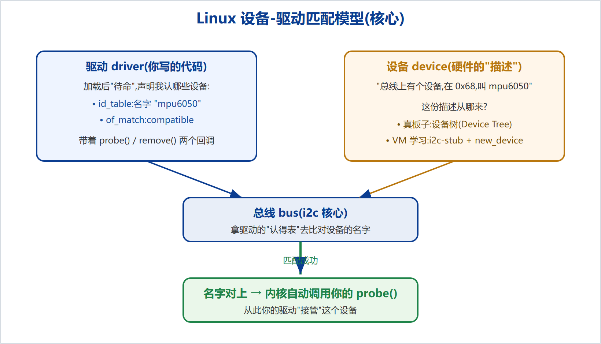
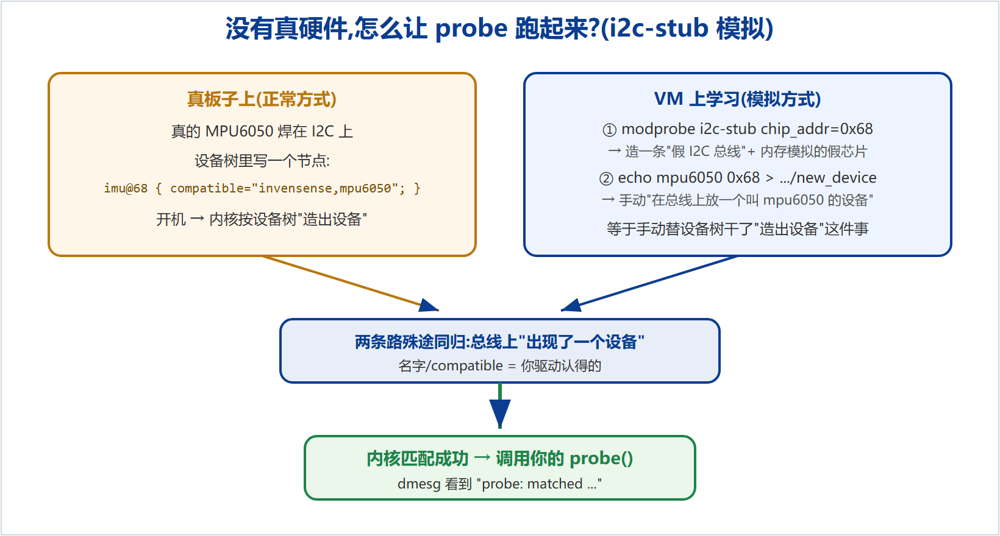

这是我们从零手写 MPU-6050 IIO 驱动过程中,到"用 i2c-stub 触发 probe"这一步为止,你必须搞懂的底层知识的系统梳理。之前之所以在 i2c-stub 那步卡住,不是那一步难,而是它下面的几层地基(内核模块、编译加载、设备-驱动模型、I2C)还没连成一个体系。本文把它们串起来。读完再回去看代码,就通了。
Linux 内核可以在运行时动态加载一段代码来扩展功能,这段代码就是内核模块(Loadable Kernel Module,LKM),文件后缀 .ko(kernel object)。驱动通常就是以模块形式存在。
每个模块都有加载和卸载时执行的函数:
module_init(xxx_init); // 加载时调用 xxx_init() module_exit(xxx_exit); // 卸载时调用 xxx_exit()
__init:标记初始化函数,内核在初始化完成后可回收这段内存。pr_info("...") / printk(...):往内核日志打印,用 dmesg 查看。它不像应用程序的 printf 直接打到屏幕。MODULE_LICENSE("GPL"):必须声明许可,否则内核会拒绝使用部分符号或告警。模块不能用普通 gcc a.c 编,必须借内核的构建系统。Makefile 里:
obj-m := mpu6050_iio.o # 把 .c 编成"模块"(m = module) KERNELDIR := /lib/modules/$(shell uname -r)/build # 内核头文件所在 kernel_modules: $(MAKE) -C $(KERNELDIR) M=$(PWD) modules
-C $(KERNELDIR):先跳到内核源码目录,用它的规则;M=$(PWD):再指回我们自己的目录来编。mpu6050_iio.ko。make 为准。| insmod ./x.ko | modprobe x | |
|---|---|---|
| 参数 | 具体 .ko 文件路径 | 模块名字 |
| 依赖 | 不处理,缺符号就报错 | 自动加载依赖 |
| 查找 | 你指的路径 | 只在 /lib/modules/ 里按 modules.dep 找 |
| 前提 | 无 | 要先 make install + depmod |
用 modprobe 时的完整循环(每次改完代码都要重跑):
make # 1) 编译出 .ko sudo make install # 2) 装到 /lib/modules/.../extra/ sudo depmod -a # 3) 重建依赖数据库 modules.dep sudo modprobe mpu6050_iio # 4) 按名字加载 dmesg | tail # 看日志 sudo modprobe -r mpu6050_iio # 卸载
/lib/modules 的命令(make install、depmod、modprobe)都要 sudo(改系统目录)。depmod 的作用:扫描所有模块、重建"名字→文件→依赖"数据库,这就是 modprobe 能按名字找到模块并自动带依赖的底气。tainting kernel / module verification failed:自编未签名模块的正常提示,不影响运行。这是最容易混淆的地方,也是入门到进阶的分水岭。
| 手动式(教程入门,如 LED) | 模型式(本项目 / 量产驱动) | |
|---|---|---|
| 入口 | module_init 里从上到下做完所有事 | module_i2c_driver 注册后"待命",等匹配 |
| 谁调你的初始化 | 你自己在 init 里干 | 内核在"设备↔驱动匹配"时自动调 probe() |
| 硬件信息 | 硬编码在 .c 里(物理地址) | 放设备树,代码不写死 |
| 访问硬件 | 自己 ioremap + readl/writel 戳寄存器 | 走总线子系统(i2c/regmap)读写 |
| 对外接口 | 自己写 file_operations(open/read/write) | 由子系统(如 IIO)自动提供 |
进阶阶梯:①手动裸写(register_chrdev+ioremap)→ ②platform_driver+设备树 → ③用子系统(gpio/iio)→ ④标准总线+标准子系统(i2c+IIO)。你跟的视频从①起步,本项目直接练到④。
现代内核把"驱动"和"设备"分开,由"总线"来撮合:
id_table / of_match_table),带着 probe() 和 remove() 两个回调。三者的关系如图 4-1:

"mpu6050" 的设备。VM 上 new_device 起的名字就走这条。compatible = "invensense,mpu6050",内核据此匹配。真板子走这条。MODULE_DEVICE_TABLE(i2c, ...) / MODULE_DEVICE_TABLE(of, ...) 的作用:把这两张表写进模块信息,让 depmod / 热插拔 / 自动加载能用到。
I2C 是一种两根线的串行总线:SCL(时钟)、SDA(数据),多个设备挂在同一对线上,每个设备有一个7 位地址(MPU6050 是 0x68,由 AD0 引脚决定 0x68/0x69)。主控(SoC)通过"给地址 + 读/写寄存器号 + 数据"和某个从设备通信。
struct i2c_driver:你的驱动"名片"(名字、匹配表、probe/remove)。struct i2c_client:代表总线上那个具体设备(在哪条总线、地址多少)。probe 的参数就是它,以后读写传感器全靠它。ioremap 是把SoC 地址空间里的寄存器映射到内核虚拟地址。而 I2C 外部芯片不在 SoC 地址空间里——它在总线的另一端。要读它的寄存器,必须发起一次 I2C 传输(i2c_smbus_read_* 或后面要学的 regmap)。这就是模型式驱动的根本原因。
手上没有真 MPU6050、或不想每次都折腾板子时,可以用内核自带的 i2c-stub 造一颗假芯片,让 probe 真的跑起来。原理如图 6-1。

sudo modprobe i2c-stub chip_addr=0x68
加载 i2c-stub 模块:它虚拟出一条 I2C 总线,上面有一颗地址 0x68 的假芯片,寄存器用内存模拟(可读可写)。
for d in /sys/class/i2c-adapter/i2c-*; do echo "$d -> $(cat $d/name)"; done
列出所有 I2C 适配器,找到名字是 SMBus stub driver 的那条,记下它的编号 N。
sudo sh -c 'echo mpu6050 0x68 > /sys/bus/i2c/devices/i2c-N/new_device'
在这条假总线上实例化一个名为 mpu6050 的设备。这一步等价于设备树在真板子上干的事——"在总线上放一个设备"。设备一出现,名字和你驱动的 id_table 对上 → 内核调用你的 probe → dmesg 出现 probe: matched。
new_device 就是手动造设备。理解了第 4 章的"待命→匹配→probe",这一步就顺理成章了。清理(方便重来):
sudo sh -c 'echo 0x68 > /sys/bus/i2c/devices/i2c-N/delete_device' sudo modprobe -r mpu6050_iio sudo modprobe -r i2c-stub
驱动怎么把数据给用户?两种常见出口:
/sys/... 下的"文件",cat 一下读一个值、echo 一下设一个值。后面 IIO 会自动生成 /sys/bus/iio/devices/iio:device0/in_accel_x_raw 这类属性,你 cat 就能读加速度。/dev/iio:device0,适合连续高速数据流(缓冲)。我们前面手动写 register_chrdev 是在自己造字符设备接口;而 IIO 子系统会替我们自动生成 sysfs 属性和字符设备,这就是"用子系统"省事又标准的地方。
已经完成(阶段一):
下一步(阶段二):往 probe 里"填肉"。每次只加一小块,编译验证一次:
| 步骤 | 往 probe 里加什么 | 验证 |
|---|---|---|
| ① | regmap 初始化(建立"怎么读写这颗芯片"的通道) | 无报错加载 |
| ② | 读 WHO_AM_I(寄存器 0x75)校验是不是 MPU6050 | dmesg 打印芯片 ID(用 i2cset 预置 0x75=0x68) |
| ③ | 唤醒芯片、配置量程/采样率 | 无报错 |
| ④ | 注册到 IIO 子系统 + 定义通道 | 出现 /sys/bus/iio/devices/iio:device0 |
| ⑤ | 实现 read_raw | cat in_accel_x_raw 能读值 |
| 命令 | 作用 |
|---|---|
| make | 编译模块,产出 .ko |
| sudo make install | 装到 /lib/modules/.../extra/ |
| sudo depmod -a | 重建依赖库 modules.dep |
| sudo modprobe x / -r x | 按名字加载 / 卸载 |
| sudo insmod ./x.ko / rmmod x | 按文件加载 / 卸载(开发期快) |
| dmesg | tail | 看内核日志 |
| lsmod | grep x | 看模块是否已加载 |
| modinfo x.ko | 看模块信息(作者、匹配表等) |
| i2cdetect -l | 列出 I2C 适配器(需 i2c-tools) |
| 概念 | 一句话 |
|---|---|
| driver | 你的代码,待命,声明认得哪些设备 |
| device | 硬件的描述,来自设备树或 new_device |
| bus | 撮合 driver 和 device 的总线(如 i2c) |
| probe() | 匹配成功后内核自动调用的"接管"函数 |
| id_table | 按名字匹配设备的表 |
| of_match_table | 按设备树 compatible 匹配的表 |
| i2c_client | 总线上那个具体设备(总线号+地址) |
| regmap | 统一的寄存器读写抽象(下一阶段学) |
| IIO | 传感器子系统,自动生成 sysfs/字符设备 |
本文为 MPU-6050 IIO 学习项目配套知识梳理。配套代码:github.com/fyy0619-cell/xiangmu